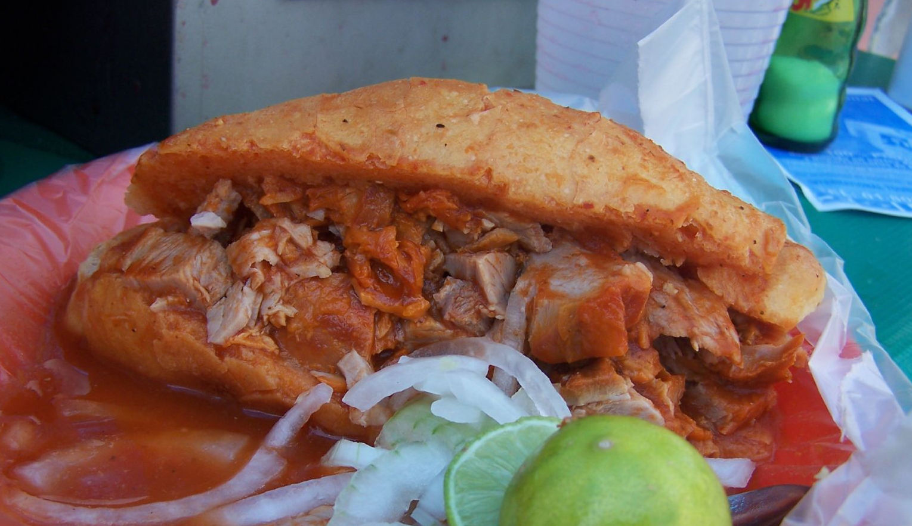

Torta Ahogada
Back to Home

“Torta ahogada” by Gwyn Fisher, CC BY-NC-SA 2.0 / Cropped from original
Description
A torta ahogada is a typical dish from the Mexican state of Jalisco, particularly in the city of Guadalajara. Although it is popular in some other parts of Mexico, it is most popular in Guadalajara. It is called "drowned" because the sandwich is submerged totally or partially in a sauce consisting of vinegar, cumin, and a dried chili pepper called chile de árbol. Less spicy versions of the sandwich, made with a tomato-based sauce, are also available.
Ingredients
- 4 large Roma tomatoes halved
- 1/2 white onion chopped
- 3 garlic cloves for tomato sauce
- 1 bay leaf
- 4 black peppercorns
- 1 teaspoon dried oregano
- 1/4 teaspoon ground cumin
- 1/2 teaspoons salt
- 4 teaspoons distilled white vinegar
- 1/3 cup chicken broth plus more if needed
- 15 dried arbol chiles stemmed and half deseeded
- 1 garlic clove for chile sauce
- 3 tablespoons chopped white onion for chile sauce
- 1/2 cup water for chile sauce
- 3/4 teaspoon distilled white vinegar for chile sauce
- Kosher salt to taste for chile sauce
- 4 birotes salados or crusty bread rolls
- 1 cup refried beans warmed
- 1 pound cooked pork carnitas
- Pickled red onions for garnish
- Lime wedges for garnish
Steps
- Place the Roma tomatoes, chopped onion, garlic, bay leaf, and peppercorns in a medium saucepan with a splash of water. Bring to a simmer and cook for about 15 minutes until the tomatoes are soft.
- Remove the bay leaf and blend the mixture with dried oregano, cumin, salt, vinegar, and chicken broth until smooth. Return the sauce to the pan and warm it through.
- Separately, in a small pot, add the dried arbol chiles, the garlic clove, and the chopped onion with 1/2 cup water. Boil for about 15 minutes until softened. Blend the mixture with the vinegar and a pinch of salt until smooth. Strain if desired for a smoother consistency.
- Cut the bread rolls in half horizontally and spread a thin layer of warmed refried beans on the inside. Optionally toast the bread lightly for extra crunch. Meanwhile, warm the pork carnitas in a pan until heated through.
- Open the toasted bread and fill with the warm pork carnitas. Spoon the tomato sauce over the meat, then drizzle the spicy chili sauce on top. Garnish with pickled red onions and serve with lime wedges on the side.
Back to Home